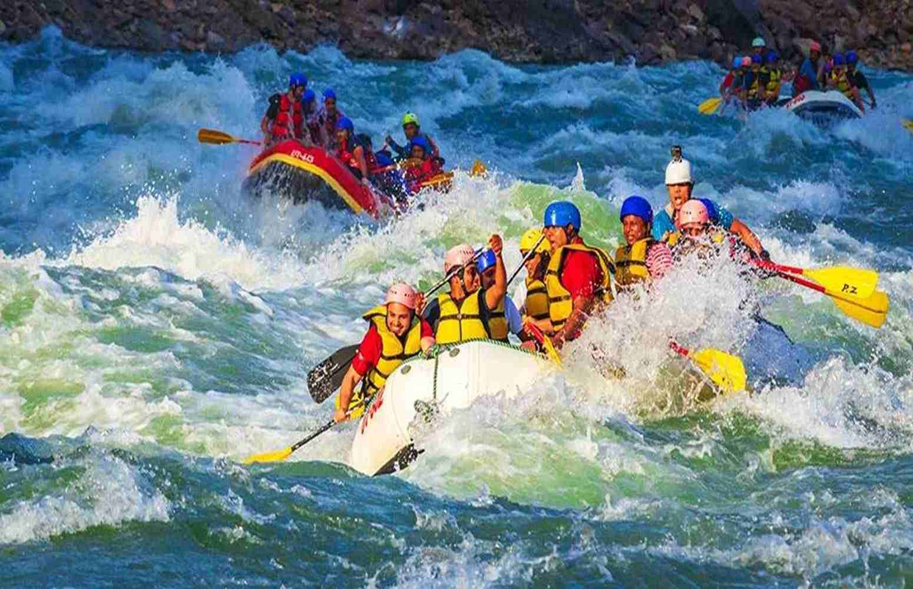
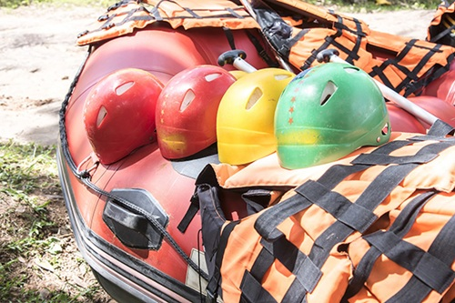

White Water Rafting

Our purpose is to connect people with nature through unforgettable whitewater adventures, driven by our mission to deliver safe, thrilling, and eco-friendly rafting experiences for all skill levels—guided by our creed to respect the river, prioritize safety, and work as a team, and our motto: Ride the Rapids. Respect the River.
History
Founded by passionate river enthusiasts, our whitewater rafting company offers guided river expeditions for beginners, families, and seasoned thrill-seekers alike. With top-grade safety gear and certified local guides, we turn every trip down the rapids into an unforgettable outdoor adventure.

Over the years, we have expanded our routes to include scenic family floats and adrenaline-pumping Class IV rapids. Every expedition is designed to connect guests with nature while maintaining the highest standards of river safety and environmental stewardship.